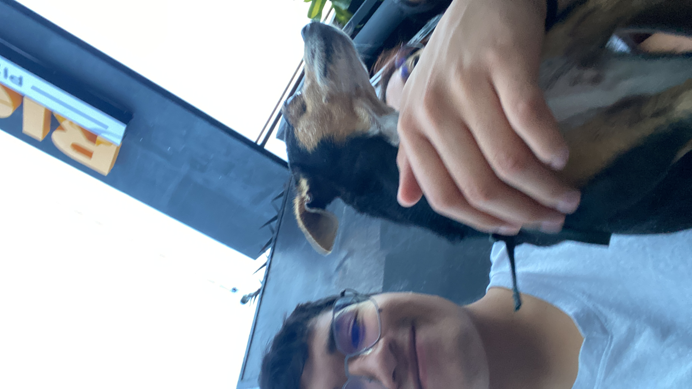

Presentacion
Autores
Nombre
Rodrigo Zermeño Cervantes
Fecha de nacimiento
Nací el 23 de octubre del 2007.
Intereses
Soy un apasionado del mundo automotriz y me encanta aprender sobre tecnología y mecánica. Siempre he sido una persona activa; empecé jugando fútbol y hoy en día disfruto practicar tenis y pádel. Actualmente estudio Ingeniería Mecatrónica en la Ibero Puebla, con el objetivo de combinar mi interés por la innovación con mi gusto por los vehículos y la ingeniería.
Logros
-Logre un 3er puesto en un torneo de karting categoria avanzada sin haber competido antes.
-Me destaco en deportes como el tenis,padel y pickleball
Nombre
Leonardo Barrientos Miguel

Nací el 23 de octubre del 2007
Mis intereses
Me considero a mi mismo un gran fanatico del baloncesto, usualmente lo practicaba he incluso llegue a estar en el equipo representativo de mi preparatoria. Por otro lado desde pequeño me gusto el tema de la robótica y en general la ingeniería, luego me adentre más en el tema y fue lo de las cosas que mas me gustaron, es por esta razón que hoy mismo soy estudiante de ingeniería mecatrónica en la Ibero Puebla.
Logros de los que estoy orgulloso
- Por un lado algo que mencione anteriormente fue el ser parte del equipo representativo de baloncesto de mi preparatoria y no solo eso, si no que llegar a ser del cuadro titutal.
- Y por otro lado un logro más "academico" que me enorgullece fue haber participado en las olimpiadas nacionales de matematicas hace un año y lograr llegar a la fase estatal consiguiendo un 3er lugar.
Contactos
Rodrigo: 203902@iberopuebla.mx
Leo: 203586@iberopuebla.mx